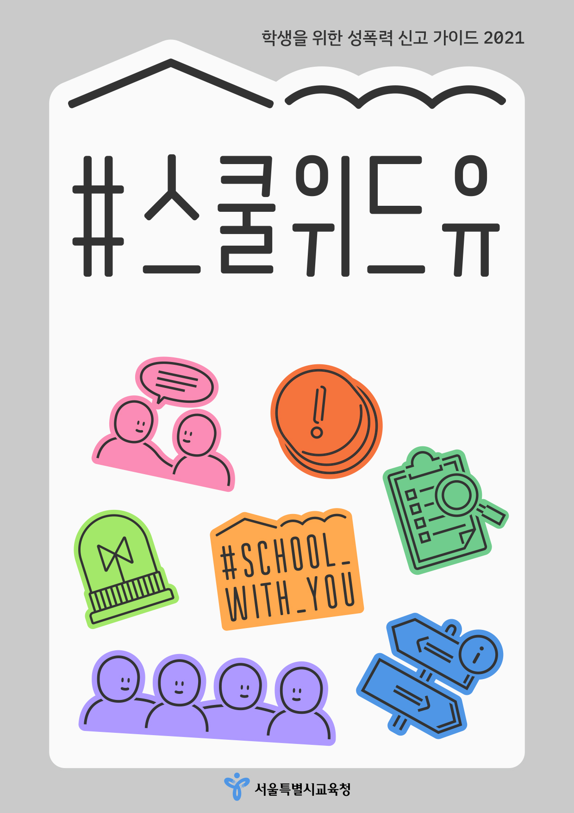

-
#스쿨위드유
이 가이드에는 학생이 성폭력을 신고할 경우 필요한 정보를 담았습니다. 성폭력 이후 피해자가 택할 수 있는 방식에는 신고 뿐 아니라 개인적 해결(사과 받기 등), 공동체적 해결(문화 바꾸기 등)도 있으며, 가장 적절한 해결 방식은 상황에 따라 다를 수 있습니다.

-
#스쿨위드유
이 가이드에는 학생이 성폭력을 신고할 경우 필요한 정보를 담았습니다. 성폭력 이후 피해자가 택할 수 있는 방식에는 신고 뿐 아니라 개인적 해결(사과 받기 등), 공동체적 해결(문화 바꾸기 등)도 있으며, 가장 적절한 해결 방식은 상황에 따라 다를 수 있습니다.
-
#스쿨위드유
이 가이드에는 학생이 성폭력을 신고할 경우 필요한 정보를 담았습니다. 성폭력 이후 피해자가 택할 수 있는 방식에는 신고 뿐 아니라 개인적 해결(사과 받기 등), 공동체적 해결(문화 바꾸기 등)도 있으며, 가장 적절한 해결 방식은 상황에 따라 다를 수 있습니다.
대응가이드
내게 일어난 일이 성폭력인지 모르겠다면?
각종 성폭력에 대응할 수 있는 정보가 담긴 가이드를 제공합니다.
- 교육감 핫라인 helpschool@sen.go.kr
- 학교폭력 신고센터 117
- 학교 성폭력 전담관 02-3999-699